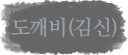
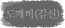
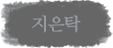
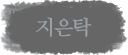

도깨비(김신), 939세
백성들은 그를 신(神)이라고 불렀다. 시뻘건 피를 뒤집어쓴 채 푸르게 안광을 빛내며 적들을 베는 그는 문자 그대로의 무신(武神)이었으나, 자신이 지키던 주군의 칼날에 죽었다. 영웅으로 살다 역적으로 죽어가던 김신에게 천상의 존재는 상인지 벌인지 모를 늙지도 죽지도 않는 생을 주었고, 그로부터 935년 동안 도깨비로 살았다. 심장에 검을 꽂은 채로.
“오직 도깨비 신부만이 그 검을 뽑을 것이다.” 지독히 낭만적인 저주였다. 그래서 쉬울 줄 알았지만 그가 만난 어떤 여자도 검을 발견하지 못한 채 불멸을 살던 어느 날. 자신을 도깨비 신부라고 소개하는 열아홉 살 소녀 은탁과 맞닥뜨린다. 그에게 도깨비 신부는 고통에서 벗어나 소멸할 수 있는 도구였다. 달리 말하면 은탁은 자신을 죽일 수 있는 유일무이한 무기였다.
죽고 싶게 괴로운 날은 은탁의 환심을 샀다가 아직 죽긴 일러 싶은 날은 멀리 했다가 하루에도 열 두 번씩 마음이 오락가락 했다. 은탁의 웃음에 그는 몇 번이나 어딘가를 돌아보고 싶은 마음에 사로잡혔다. 돌아서 한 번 더 보려는 것이 불멸의 삶인가, 너의 얼굴인가. 아, 너의 얼굴인 것 같다
 
